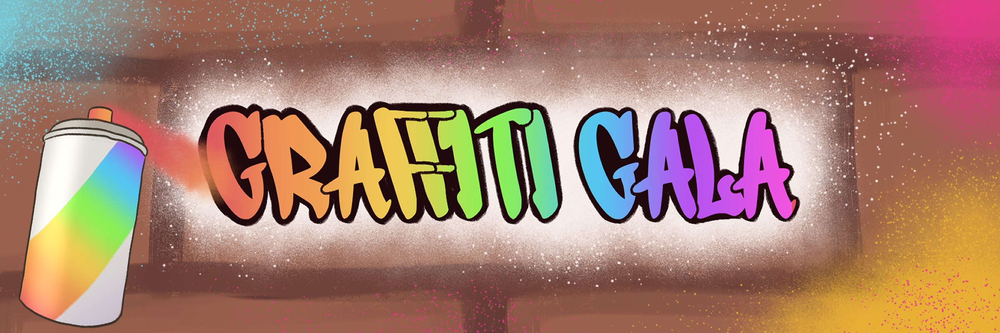

Graffiti Gala
Unleash your inner street artist in this 2D networked drawing experience!

11
4 Months
Network Programmer
Unity
Welcome to FUSE City! If you look around, you can see that our streets are looking a little... bland. But that's where you come in! Graffiti Gala is cooperative drawing experience where three players are given special spray paint controllers and are tasked with creating graffiti to add some color to the buildings. Beware though! The police are in the area, so you'll only have about 90 seconds before they arrive. If the police approve of your graffiti, then it will go up on the city streets for all to see!
My Contributions:
- Programmed core drawing and networking systems that allow for collaboration.
- Developed image capturing code to save player drawings as PNGs.
- Collaborated with the UI team to implement the player HUD for changing colors and brush sizes.
- Coded logic for placing graffiti on buildings in FUSE City
- Playtested and debugged network code.
- Ran the booth the day of FUSE.
This project was made over the spring 2025 semester for FUSE, Bradley's end of
year
showcase for the Interactive Media Department.
Over that semester, I worked with my team, Burnout Station, to create this 90 second experience to
showcase at Peoria's Riverfront Museum.
We had a total of 257 drawings from 640 people by the end of FUSE!
Presenting this experience at FUSE helped me learn how to talk about and present games to a general audience by
finding ways to boil down complex mechanics into a short 30 second explaination and being prepared to answer questions.